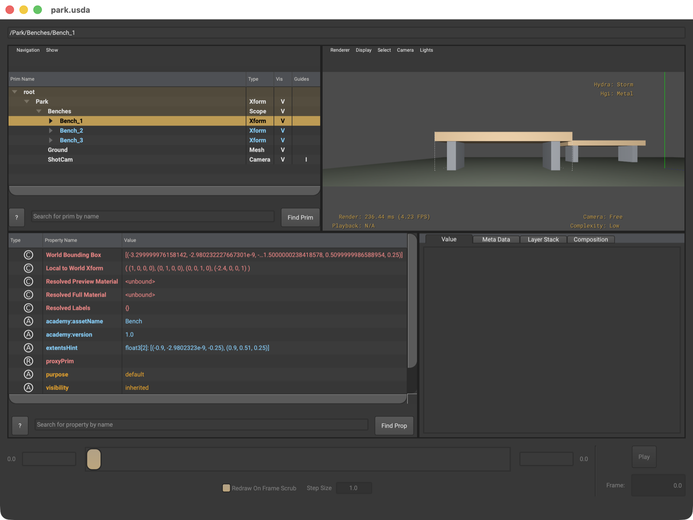
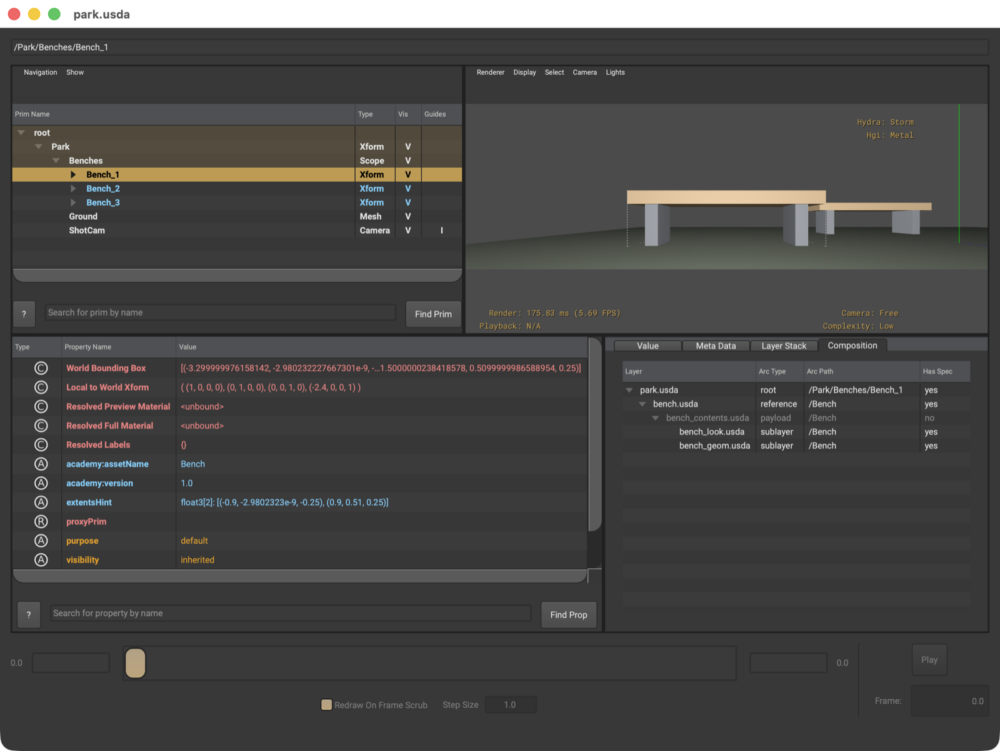
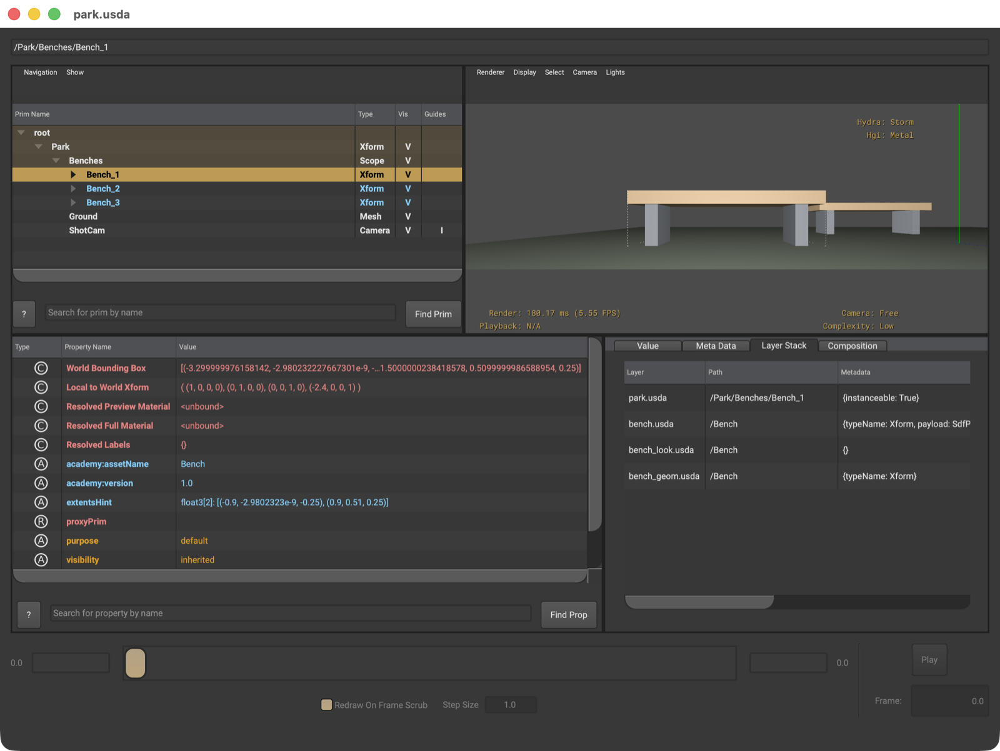

Camera: Freeをシーンのカメラだと思う
Freeはビューア側の自由視点です。シーンに書いたCameraで見たいときは--cameraで指定するか、Cameraメニューから選びます。構図を確認したいのに自由視点のまま見ていた、という取り違えが起こります。
STEP 109 · USDVIEW
ここまでAPIで読んできたものが、そのまま画面に並びます
今日これだけ
公式情報に基づく説明
usdviewは、OpenUSDに同梱されているStageの閲覧ツールです。開いたStageの階層をたどり、選んだPrimのPropertyを確かめ、描画結果を見て、さらに「その値がどのLayerから来たのか」まで画面上で追えます。
このサイトではここまで、同じことをusdtree・usdcatとPython APIでやってきました。usdviewはそれらを1つの画面にまとめたものだと考えると、覚えることが一気に減ります。STEP 110のTraverse()が左上の木、STEP 68のGetPrimStack()が右下のLayer Stackタブ、STEP 62のPrimCompositionQueryが右下のCompositionタブにあたります。
起動
$ usdview park.usda
# よく使う指定
$ usdview --select /Park/Benches/Bench_1 park.usda # 最初から選んでおく
$ usdview --camera ShotCam park.usda # 特定のCameraで開く
$ usdview --unloaded park.usda # Payloadを開かずに骨格だけ
$ usdview --renderer Storm park.usda # Render Delegateを選ぶ
$ usdview --complexity high park.usda # 細分化の精度を上げる--unloadedはSTEP 83のUnloadと同じで、重いAssetの中身を開かずに構造だけを見たいときに使います。--rendererで選べるのは、その環境に入っているRender Delegateです。この環境ではStormとGLが出ます。STEP 86で見たとおり、Stormが実装の名前で、Metalはその下で使われるグラフィックスAPIです。
画面

park.usdaを開き、/Park/Benches/Bench_1を選んだ状態です。左下のPropertyにacademy:assetNameやextentsHintが出ています。usdview --select /Park/Benches/Bench_1 park.usda（examples/lesson-71/park.usda）/ ソースからビルドしたOpenUSD v26.08 / macOS 26.5.2・Apple M4| 区画 | 見せているもの | 対応する学習内容 |
|---|---|---|
| 左上・Prim階層 | Prim名・Type・Vis・Guides | STEP 84 Traverse、STEP 76 Kind |
| 右上・描画 | Hydraによる描画結果とHUD | STEP 86 Hydra |
| 左下・Property | 選んだPrimのPropertyと値 | STEP 07 AttributeとRelationship |
| 右下・タブ | Value / Meta Data / Layer Stack / Composition | STEP 68 Prim Stack、STEP 62 Composition |
右上のHUDにHydra: StormとHgi: Metalが出ています。Hgi（Hydra Graphics Interface）が、Stormが実際に使うグラフィックスAPIです。この2行が別々に表示されていること自体が、「StormとMetalは並ぶものではない」ことの裏付けになります。
その下のCamera: Freeは、シーンのCameraではなくビューア側の自由視点を使っているという意味です。Complexity: Lowは細分化の精度で、--complexity highや画面のメニューから上げられます。
Compositionタブ
ここがusdviewを使う最大の理由です。STEP 48から学んできたComposition Arcが、Primごとに1枚の表として出ます。

/Park/Benches/Bench_1のComposition。Layer・Arc Type・Arc Path・Has Specの4列で、どの経路で何が入ってきたかが分かります。usdview --select /Park/Benches/Bench_1 park.usda / ソースからビルドしたOpenUSD v26.08 / macOS 26.5.2・Apple M4| Layer | Arc Type | Arc Path | Has Spec |
|---|---|---|---|
park.usda | root | /Park/Benches/Bench_1 | yes |
bench.usda | reference | /Bench | yes |
bench_contents.usda | payload | /Bench | no |
bench_look.usda | sublayer | /Bench | yes |
bench_geom.usda | sublayer | /Bench | yes |
この5行が、STEP 92で組んだReference/Payload Patternそのものです。シーンがbench.usdaをreferenceし、その入口が中身をpayloadで接ぎ、中身は2枚のsublayerでできています。左端のPathが/Park/Benches/Bench_1から/Benchへ変わっているのは、Referenceが名前空間を付け替えたためです。
bench_contents.usdaだけHas Specがnoで、文字も薄くなっています。これは表示の不具合ではありません。実際のbench_contents.usdaを開くと、subLayersを宣言しているだけで/BenchのPrimを自分では書いていないからです。
#usda 1.0
(
defaultPrim = "Bench"
metersPerUnit = 1
subLayers = [
@bench_look.usda@,
@bench_geom.usda@
]
upAxis = "Y"
)波括弧で囲まれたPrimの記述が1つもありません。だからHas Spec: noで、実際の中身はその下の2枚のsublayerから来ています。合成の経路には出てくるが、値そのものは持たない層があるという構造が、そのまま画面に出ています。
Pythonで同じ表を出そうとすると、1つ気付くことがあります。PrimCompositionQueryが返すのはArcで、このPrimではroot・reference・payloadの3本しかありません。画面に5行あるのは、usdviewが各Arcの中のLayer Stackを1枚ずつ展開して並べているためです。bench_look.usdaとbench_geom.usdaは、payloadというArcの中にあるsublayerとして出ています。
from pxr import Usd
stage = Usd.Stage.Open("park.usda")
prim = stage.GetPrimAtPath("/Park/Benches/Bench_1")
for arc in Usd.PrimCompositionQuery(prim).GetCompositionArcs():
node = arc.GetTargetNode()
for layer in node.layerStack.layers:
print("%-22s %-10s %-24s hasSpec=%s"
% (layer.GetDisplayName(),
arc.GetArcType().displayName,
node.path,
bool(layer.GetPrimAtPath(node.path))))park-session.usda root /Park/Benches/Bench_1 hasSpec=False
park.usda root /Park/Benches/Bench_1 hasSpec=True
bench.usda reference /Bench hasSpec=True
bench_contents.usda payload /Bench hasSpec=False
bench_look.usda payload /Bench hasSpec=True
bench_geom.usda payload /Bench hasSpec=True画面と同じ並びになりました。違いは2つだけです。1行目のpark-session.usdaは、Stageを開くと自動で用意される一時的なSession Layerで、usdviewは表示しません。もう1つは、下の2枚をusdviewがsublayerと呼んでいるのに対し、APIでは「payloadというArcの中のLayer」として出ている点です。どちらも同じものを別の粒度で見ているだけです。
Layer Stackタブ

park.usdaにinstanceable: True、bench.usdaにtypeName: Xform, payload: ...が書かれていると読めます。usdview --select /Park/Benches/Bench_1 park.usda / ソースからビルドしたOpenUSD v26.08 / macOS 26.5.2・Apple M4並んでいる4行は、STEP 68のprim.GetPrimStack()が返すものと同じです。上ほど強いという順序も同じです。Metadataの列を見れば、どのLayerが何を書いたかまで分かります。
from pxr import Usd
stage = Usd.Stage.Open("park.usda")
prim = stage.GetPrimAtPath("/Park/Benches/Bench_1")
# usdview の Layer Stack タブと同じ内容
for spec in prim.GetPrimStack():
print("%-22s %s" % (spec.layer.GetDisplayName(), spec.path))park.usda /Park/Benches/Bench_1
bench.usda /Bench
bench_look.usda /Bench
bench_geom.usda /Bench画面のLayer Stackタブと同じ4行が、同じ順で出ました。usdviewは近道であって、別の情報源ではありません。自動化したいときはPython、その場で確かめたいときはusdview、と使い分けます。
park.usda /Park/Benches/Bench_1
bench.usda /Bench
bench_look.usda /Bench
bench_geom.usda /Bench
root /Park/Benches/Bench_1 hasSpec=True
reference /Bench hasSpec=True
payload /Bench hasSpec=False
sublayer /Bench hasSpec=True
sublayer /Bench hasSpec=True画面で見えているものが、APIで同じように取れます。usdviewは近道であって、別の情報源ではありません。自動化したいときはPython、その場で確かめたいときはusdview、と使い分けます。
Diagram
usdtree / stage.Traverse()usdrecordと同じ経路prim.GetProperties() / attr.Get()GetPrimStack()PrimCompositionQueryBeginner notes
USDA → Python mapping
usdview
左上のPrim階層↓Python
for prim in stage.Traverse():usdview
Typeの列↓Python
prim.GetTypeName()usdview
Visの列↓Python
UsdGeom.Imageable(prim).ComputeVisibility()usdview
Layer Stackタブ↓Python
prim.GetPrimStack()usdview
Compositionタブ↓Python
Usd.PrimCompositionQuery(prim).GetCompositionArcs()（画面は各Arcの中のLayerまで展開）usdview
--unloaded↓Python
Usd.Stage.Open(path, Usd.Stage.LoadNone)よくある間違い
Freeはビューア側の自由視点です。シーンに書いたCameraで見たいときは--cameraで指定するか、Cameraメニューから選びます。構図を確認したいのに自由視点のまま見ていた、という取り違えが起こります。
usdviewが足したライトはファイルに書かれていません。他のツールで開くと消えます。Lightsメニューで切って確かめます。
合成の経路に出てくるだけで、そのPathに記述を持たないLayerがあります。sublayerを束ねるだけのLayerがその代表です。
subdivisionSchemeがnone以外のMeshは、Complexityによって見え方が変わります。形を確かめるときは上げてから見ます。
pip install usd-coreにusdviewは含まれません。GUIを含むフル配布か、ソースからのビルドが要ります。
Glossary
lowからveryhighまであり、見え方が変わる。reference・payload・sublayerなど。Official references
確認日: